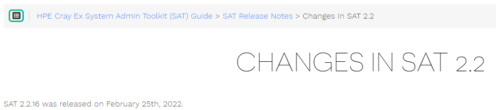
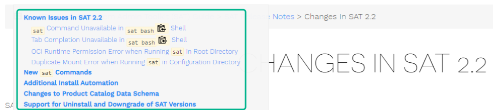
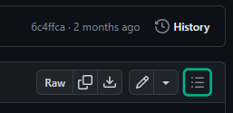
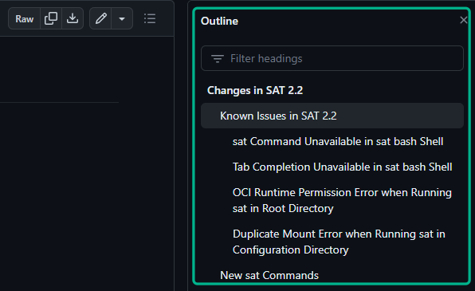

View the System Admin Toolkit (SAT) documentation both online and offline by using the information in this section.
The SAT documentation can be found online in HTML form at the following link: SAT Documentation. The navigation pane on the left of the HTML page orders topics alphabetically. Navigate an individual topic’s headings by using the Headings icon at the top of the page, as shown in the following images.


The documentation can also be viewed online in GitHub by navigating to the
docs/ subdirectory of the
docs-sat repository.
Navigate an individual topic’s headings with a similar
Headings icon at the top of the page, as shown in the following images.


The SAT documentation is available offline as markdown, which can be
viewed with a markdown viewer or with a text editor. The offline
documentation is available in the docs/ directory of the SAT release
distribution as well as in RPM package format. The RPM package is
installed as a part of the Ansible plays launched by the Configuration
Framework Service (CFS). Its files are installed to /usr/share/doc/sat.